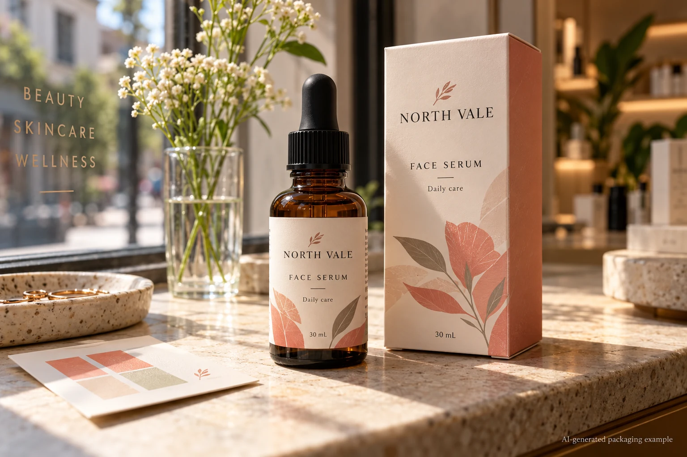
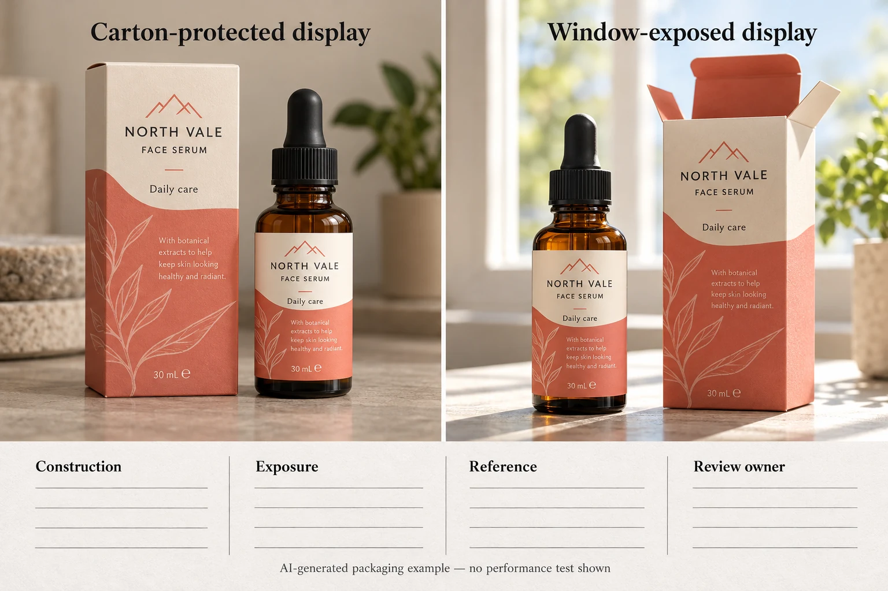

The colour proof matches the bottle on the day it is approved. The harder question comes later: will the printed design remain recognisable where the product will actually be displayed? A label beside a bright shop window faces a different light exposure from one kept inside an opaque carton until sale.
For a light-exposed cosmetic label, define the display conditions and the appearance that must remain acceptable, then ask the printer what evidence applies to the finished ink, material and protective finish. A blue wool rating can describe an ink's lightfastness under a test method. It is not a guaranteed number of months on your shelf, and it does not prove the performance of the whole applied package.

Separate the colour match from colour stability
An initial proof answers whether the colour is acceptable at approval. The colour matching guide covers bottle colour, stock, lighting and the first comparison. A lightfastness review asks a later question: how does that appearance change after a defined exposure?
Consider two hypothetical launches. A limited seasonal set lives mainly inside a closed gift box. Its buyer might decide a normal printed proof and confirmation of storage and display conditions are appropriate. A skincare bottle intended for an illuminated window display for an extended period has a different question. That buyer should discuss the display exposure, printed colours and suitable evidence before committing to the full run.
Neither scenario lets us predict a failure or promise a lifetime. If the intended exposure is unknown, write that uncertainty into the brief instead of calling the label fade-proof.
Specify the part of the design that must survive
Not every visual change has the same consequence. A pale background shifting slightly may matter for a premium brand colour; a product name losing contrast can affect basic identification. Identify the important areas on an approved artwork revision:
- Brand and product name, including the intended contrast against the background.
- Colours used to distinguish variants, where a change could make two products harder to tell apart.
- Small copy or a barcode that must remain usable under the agreed conditions.
- The approved reference used for comparison: physical print, bottle and lighting conditions.
If a numerical colour difference is part of the evaluation, the Delta E agreement guide explains why the equation, reference and measurement conditions must be specified. A barcode needs its own review by the responsible barcode owner or verifier. A colourfastness test alone does not establish barcode scan quality. Likewise, do not infer product or formulation stability from a label's appearance: those are separate questions.
Ask what the rating actually represents
Avery Dennison's technical bulletin describes lightfastness by comparison with a blue wool scale. The reference scale runs from lower to higher resistance in the conditions of the test. The number is useful when it comes with the ink identity, method and sample description. It is less useful when someone writes only ?UV resistant? on a purchase order.
Ask the supplier:
- Which ink, colour or printed combination does the rating describe? Is it a data-sheet value or a result on this proposed construction?
- What method and exposure conditions were used, and which appearance change was evaluated?
- Was the actual face material, print process and finish represented? If not, what remains unknown?
- Does the proposed laminate or coating have documented relevance to this light exposure? Can it be assessed as part of the finished construction?
- Who will define the acceptable colour or legibility change and compare the samples?
A curing process using UV light is a manufacturing description; the term alone is not a lightfastness guarantee. Manufacturer guidance also treats ink, substrate and protective layer as related parts of the finished system. A protective layer may be worth evaluating, but its name is not evidence that a particular colour will meet your display requirement.
Use a comparison record before approving the order
| Record | Input | Decision it supports |
|---|---|---|
| Display scenario | Location, expected duration, direct or indirect light, packaging and any known shop-light conditions | Whether a light-exposure review is necessary and what to ask the printer |
| Critical artwork | Approved revision, priority colours, variant identifiers and essential copy | Which visible changes matter to the brand |
| Construction | Printer, ink/process, face material, finish and container reference | Whether the evidence applies to the proposed pack |
| Evidence | Data sheet or test record, sample identity, method, exposure and results | Whether the evidence can be interpreted without inventing a shelf-life claim |
| Comparison | Retained reference, viewing conditions and agreed acceptance criteria | Who can judge the observed result |
| Owner | Brand, converter and relevant technical reviewer | Who closes the question before release |

Start by filling the first three rows with the brand and converter. Ask the technical party what representative samples and exposure method are appropriate. Retain an identified reference and document the agreed observation conditions; if a controlled test is needed, let the qualified party specify and conduct it. A photo taken under different lighting can prompt an investigation but should not be presented as a controlled test.
If the ink or finish changes after a sample was assessed, check whether the original evidence still applies. If the display environment or reference sample is unknown, leave the acceptance decision open. A quote can proceed with that open item; production release should follow the brand's own review and the responsible parties' agreement.
Compare changes without treating one as a universal fix
One option is to investigate a different ink or print process with the converter. Another is to assess a protective finish as part of the proposed construction. A third is to change the packaging or display arrangement, for example keeping a product in its carton until it reaches a less exposed location. Each option affects the project differently: appearance, process availability, handling and price must be discussed for the actual job.
A stronger lightfastness figure for one ink is not proof that all colours in a mixed design will change equally. Nor does light exposure settle resistance to water, oil, rubbing or the product formulation. Discuss those conditions separately when relevant; the waterproof materials guide is a starting point for a different exposure question.
Send a brief that makes the decision possible
For custom cosmetic bottle labels, prepare the bottle and carton references, artwork revision, quantity per design, intended display conditions, priority colours and any existing colour reference. Explain whether a finish is preferred and who will approve the appearance comparison. Use the quote form to prepare a message, then send artwork and reference photographs separately by email or WhatsApp; the form does not upload attachments automatically.
Sources: Avery Dennison technical bulletin explains lightfastness and the blue wool comparison for its technical context. Avery Dennison on outdoor label constructions discusses protective layers and the need to match tests to the application. Neither source proves a result for your specific cosmetic label.